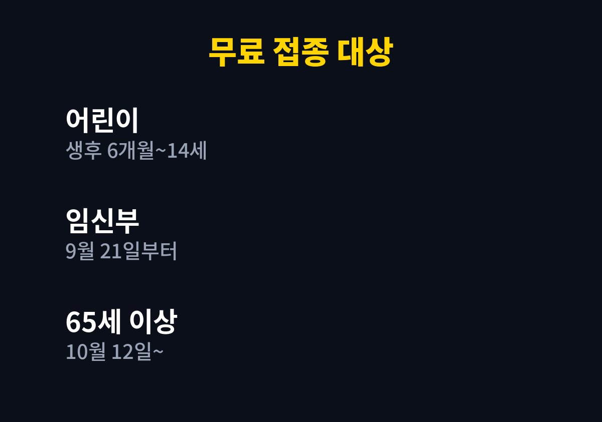
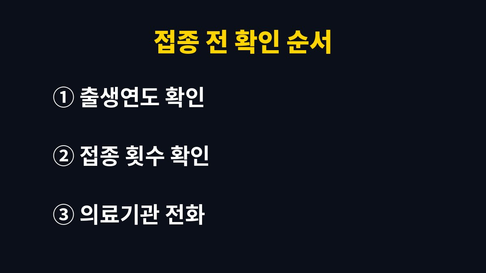

독감 무료 예방접종은 2026년 9월 21일부터 2027년 4월 30일까지 이어지는 '26-'27절기 국가예방접종이고, 올겨울에는 대상이 14세 어린이까지 넓어졌다.
질병관리청이 2026년 8월 25일 발표한 안내(10월 13일 수정본)를 기준으로 우리 가족이 어떤 날짜부터 맞을 수 있었는지 풀어 적었다.
11월 8일 현재는 어린이, 임신부, 65세 이상이 모두 접종을 시작할 수 있는 시기다.
대상은 크게 세 부류다.
생후 6개월부터 14세까지의 어린이, 임신부, 65세 이상 어르신이다.
어린이는 2012년 1월 1일부터 2026년 8월 31일 사이에 태어난 아이가 해당한다.
사용하는 백신은 WHO 권장주를 모두 담은 3가 백신이고, 세 부류 모두 무료 접종이다.
지난 절기에는 이 연령이 빠져 있어 학부모가 일부러 병원 접종을 알아본 가정도 많았다.
올해는 같은 아이가 보건소와 위탁의료기관에서 무료로 맞을 수 있는지부터 확인하면 된다.
접종은 주소지와 관계없이 가까운 위탁의료기관이나 보건소에서 받는다.
전국 위탁의료기관은 약 2.3만 개소다.
집 앞 병원이 위탁의료기관인지는 예방접종도우미 누리집의 지정의료기관 찾기에서 본다.
시작일은 대상마다 다르게 열렸다.
11월 8일 현재 기준으로는 아래 대상이 모두 접종할 수 있다.
다만 어린이의 1회와 2회 구분은 아이의 과거 접종 기록에 달려 있다.
| 구분 | 대상 | 시작일 |
|---|---|---|
| 어린이 2회 대상 | 접종력이 없거나 1회만 맞은 9세 미만 | 9월 21일 |
| 어린이 1회 대상 | 2회 대상 외 생후 6개월~14세 | 9월 28일 |
| 임신부 | 연령·출생연도 기준 없음 | 9월 21일 |
| 75세 이상 | 1951년 12월 31일 이전 출생 | 10월 12일 |
| 70~74세 | 1952년~1956년 출생 | 10월 15일 |
| 65~69세 | 1957년~1961년 출생 | 10월 19일 |

순서를 미리 정해 두면 병원 접수대 앞에서 헤매지 않는다.
출생연도와 과거 접종 기록, 이 두 가지만 있으면 대부분 가려진다.

9세 미만이라도 모두 두 번 맞는 것은 아니다.
과거 접종력이 없거나 1회만 맞은 아이가 2회 대상이다.
2회 대상에 들지 않으면 1회 대상이고, 시작일도 9월 28일이다.
신청서를 따로 쓰거나 미리 신청하는 절차가 안내에 있는지는 보도자료에서 확인되지 않아, 방문할 기관에 필요한 준비물을 물어보는 편이 확실하다.
접종 기간은 2027년 4월 30일까지다.
11월에 접어들었어도 무료 접종 기간은 한참 남아 있다.
다만 의료기관마다 사정이 다를 수 있어 방문 전에 전화로 확인하는 편이 빠르다.
공식 보도자료 본문에는 접종 후 주의사항이 실려 있지 않다.
그래서 접종 전 몸 상태는 의료진에게 먼저 말하고, 접종 후 안내는 접종한 기관에서 받은 내용을 따른다.
나는 일정을 미루면 어느새 학교와 직장에서 환자가 늘 때가 온다고 보고, 날짜를 먼저 잡아 두는 쪽을 택한다.
이번 주에 할 일은 하나다.
가족 중 대상자를 출생연도로 가려 두고, 가까운 위탁의료기관 한 곳에 전화를 건다.
열이 있거나 몸 상태가 평소와 다르면 접종 전에 의료진과 상담한다.
접종 뒤에도 증상이 계속되거나 지병이 있다면 전문의 상담을 받는다.
참고 자료: 질병관리청 보도자료 「올겨울 인플루엔자 국가예방접종, 14세까지 확대해 9월 21일부터 순차 시행」(2026년 11월 확인)
※ 2026년 기준 공식 기준을 바탕으로 정리한 일반 건강 정보이며, 증상이 계속되거나 지병이 있다면 전문의와 상담하길 바란다.